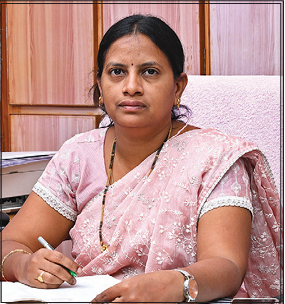

Sir C.R. Reddy Nursing College

College Vision
To prepare nurses who will work in hospitals and communities with dedication, devotion, compassion and kindness.
College Mission
To provide the finest environment to facilitate the practice of nursing in a dynamic setting with excellent nursing education, world-class facilities and a strong spirit of service to the community.
Sri Paladugu Srirangam
Correspondent

Smt. V. Aruna Kumari
Principal
About College
Sir C R Reddy College of Nursing offers an excellent opportunity to become a professional nurse. The college aims at turning out students who meet global standards of nursing education.
College Features
- Sir C R Reddy College of Nursing is attached with District Government Hospital, Eluru, Gajjalavari Cheruvu UHC, Vatluru PHC and private hospitals.
- Well experienced and dedicated faculty.
- Excellent infrastructure including lecture halls with LCD projectors and sound systems, laboratories, digital library, auditorium and examination hall.
- Facilities for indoor and outdoor games under the guidance of lady physical director and trainers.
- External classes conducted by medical college faculty.
- Overall development of students through teacher guidance, counseling and mentoring sessions.
Purpose
The aim of the undergraduate program is to prepare knowledgeable and competent nurses and midwives with critical thinking skills who are caring, motivated, assertive and disciplined, capable of responding to the changing needs of the profession, healthcare delivery system and society.
Course Objectives
- Utilize critical thinking to synthesize knowledge from physical, biological, behavioural sciences and humanities in professional nursing and midwifery practice.
- Practice nursing and midwifery competently and safely in diverse settings using caring and therapeutic interventions.
- Apply leadership, autonomy and management concepts to enhance quality and safety in healthcare.
- Practice independently and collaboratively with health professionals using modern skills and technologies.
- Integrate research findings and nursing theory into evidence-based practice.
- Participate in professional advancement for the betterment of global healthcare.